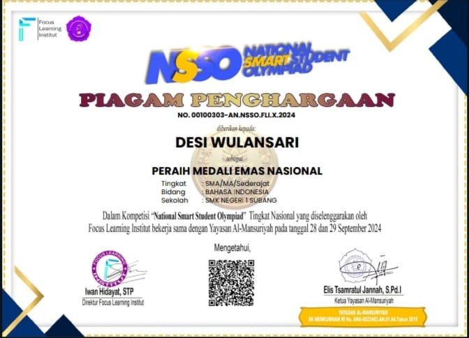

Projects — Server & Tools
Klik salah satu project untuk melihat tutorial atau demo.
Project Server
DHCP / DNS / Apache / Nginx / FTP / Mail
Web Development
HTML / CSS / JS
Database
MySQL / PostgreSQL
Tools & Scripts
Automation & Monitoring
Achievements
Beberapa prestasi dan sertifikat yang pernah aku dapatkan.

Winning a Gold Medal in the Indonesian Language Olympiad at the 2024 National Smart Olympiad

Juara 2 — LKS TKJ

Juara Favorit — Web Design
Experience
Pengalaman magang, kerja tim, dan deployment proyek.
PKL - Deployment Server
Praktik langsung setup DHCP, DNS, FTP.
Lomba & Presentasi
Presentasi topologi jaringan dan hasil konfigurasi.